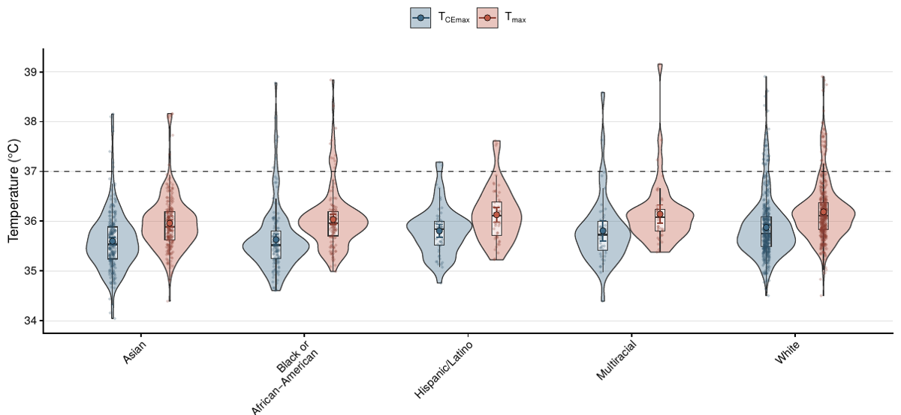
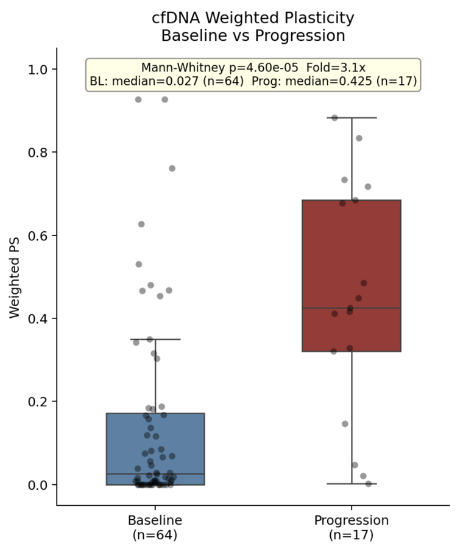
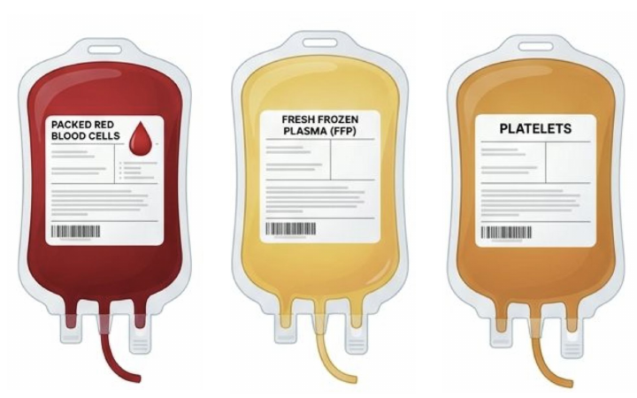

For whom is 37°C a normal body temperature?
Using infrared facial temperature data collected during the COVID-19 pandemic, I found statistically significant differences of 0.2 to 0.3°C across recorded racial and ethnic groups. Yet the differences were comparable to the instrument's stated accuracy of ±0.2°C, and group rankings became increasingly unstable as simulated measurement error increased. I am now using Epic Cosmos and Bayesian inference to examine how pediatric temperature distributions vary with age, clinical presentation, and care setting, and how reliably electronic health records can inform pediatric reference ranges and fever classifications.

What might a subtype label leave out?
Small-cell lung cancer tumors are assigned a single molecular subtype, even though a tumor's neuroendocrine identity and immune state represent distinct biological dimensions. Using gene-expression signatures, I scored each dimension on a continuous scale and measured overlap between subtypes with plasticity scores. Tumors classified differently by immunohistochemistry and gene-expression clustering had higher plasticity scores, and plasticity rose at disease progression and after chemotherapy. As subtype-specific therapies emerge, a label assigned at diagnosis may no longer represent a tumor's biology when later treatment decisions are made.

What do physicians register as meaningful information, and what happens to it next?
For my master's capstone, I am conducting a year-long observational study of inpatient and ambulatory internal medicine at Yale New Haven Hospital, examining what data physicians register as meaningful information across bedside encounters, team discussions, consultations, and handoffs. Through qualitative analysis, I am developing an information model to trace how physicians turn observations into meaningful information and where that meaning may be lost as it passes between clinicians and into the medical record.
Manuscript in preparation · The Making of Clinical Information: A Qualitative Study of How Information Is Interpreted and Documented in an Academic Health System
“I don't think these are her labs.”An attending, on rounds
What happens during a massive transfusion, and what reaches the record?
Working with Yale New Haven Health trauma services, I am examining how blood products given during massive transfusions are ordered, tracked, and documented in Epic, and where the record diverges from what was actually administered. Emergency blood is often given before an order exists, and products are frequently scanned and charted after the protocol ends, leaving clinicians without a reliable count of what was given when balancing transfusions or handing the patient to the next team. Our goal is to give clinicians an accurate and accessible record of administered blood products that supports real-time transfusion decisions and continuity of care.

As physicians turn data into information, when do changes affect the diagnoses they consider or the treatments they pursue?
My doctoral objective is to develop computational and statistical methods to investigate how clinical information is produced, represented, and transformed throughout the diagnostic process. I aim to examine how these transformations affect the reliability and interpretation of clinical findings, quantify their consequences for diagnostic decisions, and use those findings to design and evaluate targeted improvements to clinical systems and workflows.